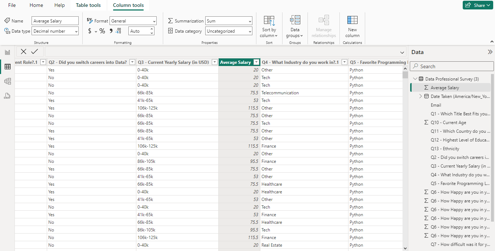
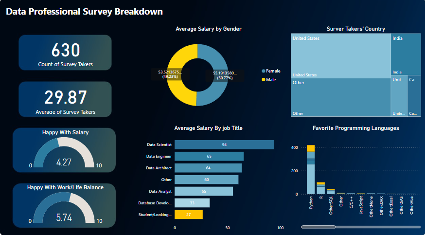

About the project
Power BI/Power Query Projects is created with real data collected from a survey of data professionals. The project involves data transformation, visualization creation, and dashboard finalization.
Data transformation using Power Query, including splitting columns and cleaning data.
Removing the columns without data, standardizing every column. I also change some of the data types.
For example, we want add beside "Current Yearly Salary" column called "Average Salary".
The raw data type of "Current Yearly Salary" column is text. Changing it to Decimal number makes the PowerBI accept it as a number and enabling to visualize the data.

Dashboard Summary: Data Professional Survey Breakdown

This dashboard presents a comprehensive overview of survey results from data professionals, highlighting key metrics and insights. Below is a summary of its contents and the various charts included:
- Survey Takers' Country: A treemap visualizing the distribution of survey respondents by country. Prominent countries include the United States, India, Canada, and the United Kingdom, with 'Other' countries grouped together.
- Average Salary by Job Title: A horizontal bar chart displaying the average salary for various job titles within the data profession. Job titles include Data Scientist, Data Engineer, Data Architect, Data Analyst, Database Developer, and Student/Looking/Not Working.
- Count and Average Age of Survey Takers: Two large numbers indicating:
- Total count of survey respondents: 630
- Average age of survey respondents: 29.87 years
- Happy with Work/Life Balance: A semicircular gauge chart showing the average rating for work/life balance satisfaction (5.74 out of 10).
- Happy with Salary: A semicircular gauge chart illustrating the average rating for salary satisfaction (4.27 out of 10).
- Favorite Programming Languages: A bar chart indicating the count of votes for favorite programming languages among survey respondents. Includes languages such as Python, R, SQL, Java, C++, and others.
- Average Salary by Gender: A donut chart representing the average salary distribution by gender. Shows the percentage and actual salary for female and male respondents.
Check the repository
This contains the project database and the Power BI file. Click here

Interactive Excel Dashboards: Built for Exploration
This project delves into interactive Excel dashboards. I mastered data prep, crafting insightful visualizations (like Map chart and Line chart). This empowers me to create clear and engaging dashboards for complex data.
Learn more

Tableau Projects
The COVID-19 project involves analyzing and visualizing data related to the pandemic's global impact. Using Tableau, we track key metrics such as total cases, vaccination rates, and death tolls compared to population sizes.
Learn more